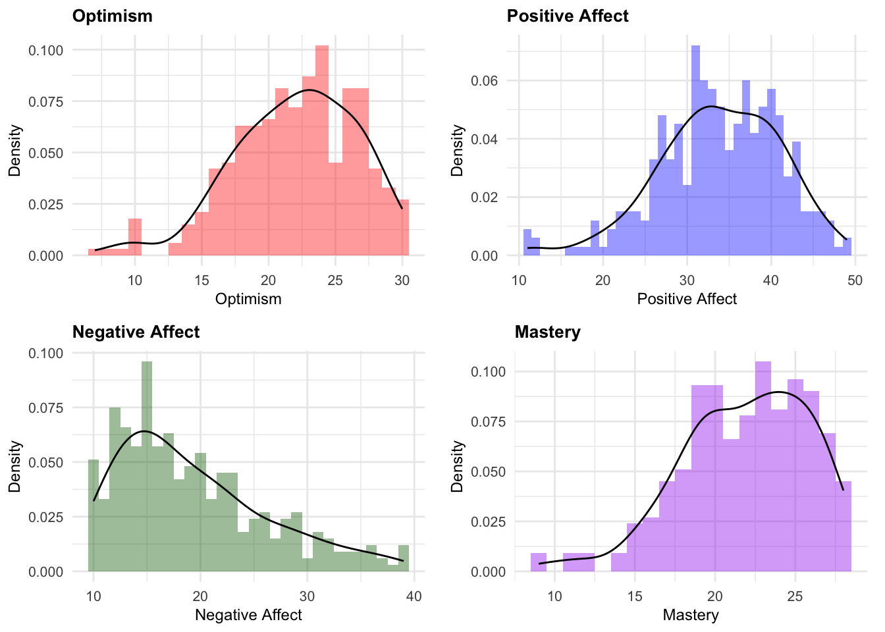
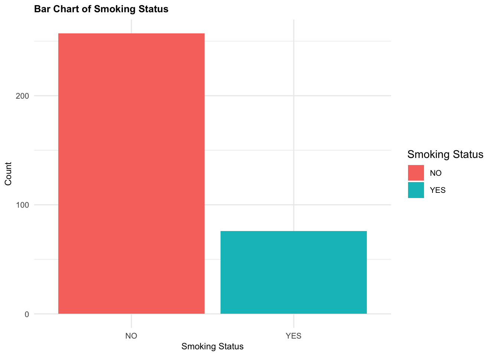
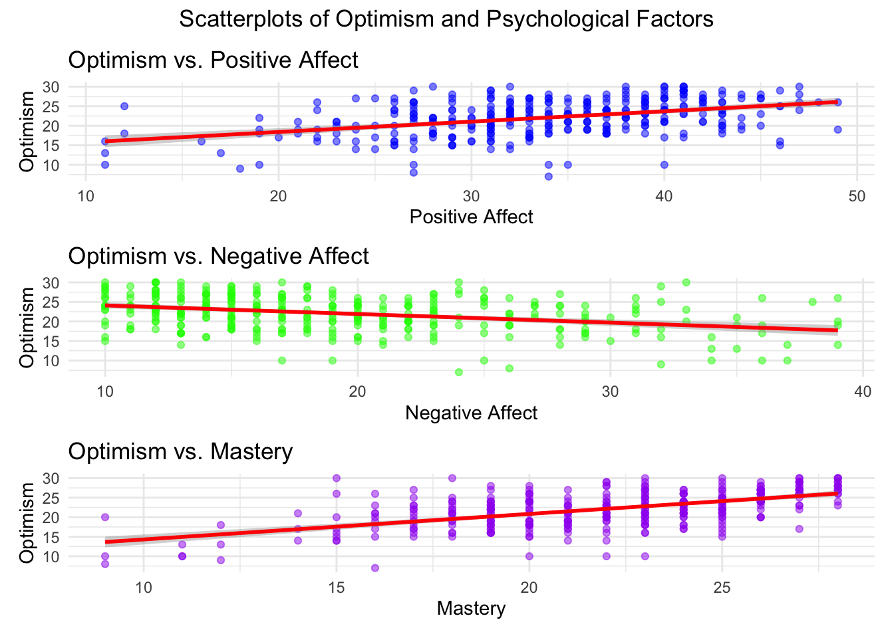
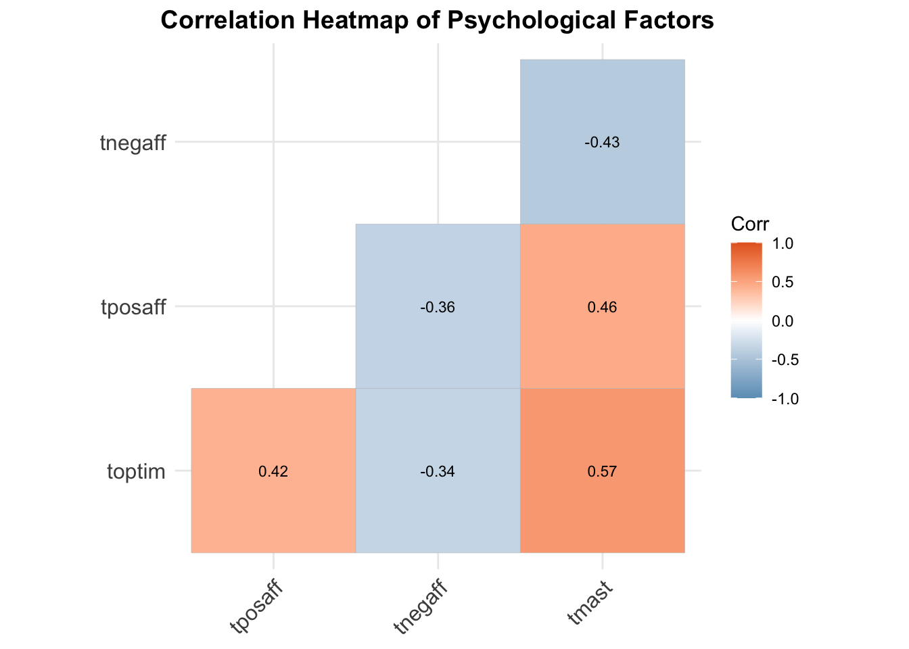

# Optimism Histogramtoptim_hist <-ggplot(survey, aes(x = toptim)) +geom_histogram(aes(y =after_stat(density)), binwidth =1, alpha =0.4, position ="identity", fill ="red") +geom_density(alpha =0.7, adjust =1.2) +labs(title ="Optimism", x ="Optimism", y ="Density") +theme_minimal() +theme(plot.title =element_text(size =10, face ="bold"),axis.title =element_text(size =9),axis.text =element_text(size =8),legend.text =element_text(size =8),plot.margin =margin(5, 10, 5, 5) )# Positive Affect Histogramtposaff_hist <-ggplot(survey, aes(x = tposaff)) +geom_histogram(aes(y =after_stat(density)), binwidth =1, alpha =0.4, position ="identity", fill ="blue") +geom_density(alpha =0.7, adjust =1.2) +labs(title ="Positive Affect", x ="Positive Affect", y ="Density") +theme_minimal() +theme(plot.title =element_text(size =10, face ="bold"),axis.title =element_text(size =9),axis.text =element_text(size =8),legend.text =element_text(size =8),plot.margin =margin(5, 10, 5, 5) )# Negative Affect Histogramtnegaff_hist <-ggplot(survey, aes(x = tnegaff)) +geom_histogram(aes(y =after_stat(density)), binwidth =1, alpha =0.4, position ="identity", fill ="darkgreen") +geom_density(alpha =0.7, adjust =1.2) +labs(title ="Negative Affect", x ="Negative Affect", y ="Density") +theme_minimal() +theme(plot.title =element_text(size =10, face ="bold"),axis.title =element_text(size =9),axis.text =element_text(size =8),legend.text =element_text(size =8),plot.margin =margin(5, 10, 5, 5) )# Mastery Histogramtmast_hist <-ggplot(survey, aes(x = tmast)) +geom_histogram(aes(y =after_stat(density)), binwidth =1, alpha =0.4, position ="identity", fill ="purple") +geom_density(alpha =0.7, adjust =1.2) +labs(title ="Mastery", x ="Mastery", y ="Density") +theme_minimal() +theme(plot.title =element_text(size =10, face ="bold"),axis.title =element_text(size =9),axis.text =element_text(size =8),legend.text =element_text(size =8),plot.margin =margin(5, 10, 5, 5) )# Arrange the plots using cowplothistogram_grid <-plot_grid(toptim_hist, tposaff_hist, tnegaff_hist, tmast_hist, nrow =2, ncol =2)# Display the gridhistogram_grid

Optimism, Postive affect and Mastery are left skewed and Negative Affect is right skewed.
Smoking Status Bar Chart
Code
smoke_bar <-ggplot(survey, aes(x = smoke, fill =as.factor(smoke))) +# Color by categorygeom_bar() +labs(title ="Bar Chart of Smoking Status", x ="Smoking Status", y ="Count", fill ="Smoking Status") +theme_minimal() +theme(plot.title =element_text(size =10, face ="bold"),axis.title =element_text(size =9),axis.text =element_text(size =8),legend.text =element_text(size =8),plot.margin =margin(5, 10, 5, 5) )smoke_bar

There is a major class imbalance of non smoker to smokers is this a possible source of the skewness we observe above.
Box plot Comparing optimism between smokers and non smokers
Code
# Box plot Comparing optimism between smokers and non smokerssmoke_box <-ggplot(survey, aes(x = smoke, y = toptim, fill = smoke)) +geom_boxplot() +labs(title ="Boxplot of Optimism by Smoking Status", x ="Smoking Status", y ="Optimism", fill ="Smoking Status") +theme_minimal() +theme(plot.title =element_text(size =10, face ="bold"),axis.title =element_text(size =9),axis.text =element_text(size =8),legend.text =element_text(size =8),plot.margin =margin(5, 10, 5, 5) )smoke_box
The 3rd quartile of people who dont smoke is higher but the median of smoker is higher than non smokers. The 1st quartile of smokers is lower than that of non smokers
The minimum and maximum of both classes are around the same
In non smokers there are two outliers who are really low on optimism.
We do have significantly less examples of smokers than non smokers if our dataset was larger there might have been a bigger difference in the box plots.
Exploring Relaitonships
Correlation coefficients and p-values
The correlation between Total optimism and positive affect, negative affect and mastery
Each of the correlations are moderate i.e 0.3 to 0.6
Mastery has the highest correlation with Optimism at 0.569.
All of the correlations for the psychological factors all have a P value < 0.05 making it seem to be statically significant enough to rule out random chance.
Scatterplot with linear regression
Code
create_scatterplots_toptim <-function(data, title) { p1 <-ggplot(data, aes(x = tposaff, y = toptim)) +geom_point(alpha =0.5, color ="blue") +geom_smooth(method ="lm", color ="red", se =TRUE) +labs(title ="Optimism vs. Positive Affect", x ="Positive Affect", y ="Optimism") +theme_minimal() p2 <-ggplot(data, aes(x = tnegaff, y = toptim)) +geom_point(alpha =0.5, color ="green") +geom_smooth(method ="lm", color ="red", se =TRUE) +labs(title ="Optimism vs. Negative Affect", x ="Negative Affect", y ="Optimism") +theme_minimal() p3 <-ggplot(data, aes(x = tmast, y = toptim)) +geom_point(alpha =0.5, color ="purple") +geom_smooth(method ="lm", color ="red", se =TRUE) +labs(title ="Optimism vs. Mastery", x ="Mastery", y ="Optimism") +theme_minimal()# Combine plots using patchwork (p1 / p2 / p3) + patchwork::plot_annotation(title = title, theme =theme(plot.title =element_text(hjust =0.5)))}# Call the function with the datasetscatter_plots <-create_scatterplots_toptim(survey, "Scatterplots of Optimism and Psychological Factors")print(scatter_plots)
`geom_smooth()` using formula = 'y ~ x'
`geom_smooth()` using formula = 'y ~ x'
`geom_smooth()` using formula = 'y ~ x'

Positive affect has a a moderate positive correlation with Optimism meaning that happier people tend to be more optimistic
Mastery has a moderate positive correlation with Optimism meaning those who feel in control tend to be more optimistic
Negative Affect hasa moderate negative correlation meaning that more negative emotions tend to lower your optimism
Correlation Heatmap
Code
# Function to create a heatmapcreate_heatmap <-function(data, title) {# Select only relevant columns selected_data <- data %>%select(toptim, tposaff, tnegaff, tmast)# Compute correlation matrix corr_matrix <-cor(selected_data, use ="complete.obs")# Generate heatmap p <-ggcorrplot(corr_matrix, type ="lower", lab =TRUE, lab_size =3, colors =c("#6D9EC1", "white", "#E46726"), title = title, ggtheme =theme_minimal()) +theme(plot.title =element_text(hjust =0.5, size =14, face ="bold"))return(p) # Ensure function returns the plot}# Generate and display the heatmapheatmap <-create_heatmap(survey, "Correlation Heatmap of Psychological Factors")print(heatmap)

Blue squres are negative correlation and Red squares are positive correlation
I.e Positive Affect and Negative Affect have moderate negative correlation as happier people tend to have less negative thoughts.
People who are more in control tend to be happier and optimistic
Source Code
---title: "CMPU4091 Visualising Data"subtitle: "Correlation"author: "Matthew Bradon C21380786"format: html: code-fold: true code-tools: true css: "./styles.css"editor: visual---```{r setup, include="FALSE"}#Setting include to FALSE on this chunk so that it doesn't appear in the output# Load necessary librariesoptions(repos = c(CRAN = "https://cloud.r-project.org"))if (!require("tidyverse")) install.packages("tidyverse", dependencies = TRUE)if (!require("cowplot")) install.packages("cowplot", dependencies = TRUE)if (!require("plotly")) install.packages("plotly", dependencies = TRUE)if (!require("ggcorrplot")) install.packages("ggcorrplot", dependencies = TRUE)if (!require("pastecs")) install.packages("pastecs", dependencies = TRUE)if (!require("PerformanceAnalytics")) install.packages("PerformanceAnalytics", dependencies = TRUE)if (!require("patchwork")) install.packages("patchwork", dependencies = TRUE)if (!require("Hmisc")) install.packages("Hmisc", dependencies = TRUE)if (!require("corrplot")) install.packages("corrplot", dependencies = TRUE)if(!require("mgcv")) install.packages("mgcv", dependencies = TRUE)library(tidyverse) # Tools for wrangling datalibrary(cowplot) # For organising plots into a gridlibrary(patchwork) # For matrix layoutlibrary(plotly) # For Animating plotslibrary(ggcorrplot) # For Correlation Heatmaps library(corrplot) # For correlation matriceslibrary(PerformanceAnalytics)# For standardised skewness and kurtosislibrary(Hmisc) # For generating correlation#We are using a file created from the SPSS file survey.sav taken from SPSS Survival Manual 6th Edition Julie Pallant (http://spss.allenandunwin.com.s3-website-ap-southeast-2.amazonaws.com/data-files.html#.Wb0vvnWP-po). #This has been saved to a .dat format - more easily readable in R.# Load dataset - format the location using file.path to ensure it will locate it correctly# I work on windows on desktop but mac laptop for demo# mydata <- file.path("C:/Users/Matt/Desktop/VisualizingDataRModule/Week4")mydata <- file.path("/Users/xsmoked/Desktop/College/Sem2/VisualizingData/Week4")datapath <- file.path(mydata,'survey.dat')#Load it into the dataframe called survey (.dat file so use read.Table)survey <- read.table(datapath)#Setting the column names to be that used in the dataset but in lowercase to make life a bit easiercolnames(survey) <- tolower(colnames(survey))survey <- na.omit(survey)```<p># Summarise the datasummary(survey)str(survey)</p># Histograms with Density Plots```{r}# Optimism Histogramtoptim_hist <-ggplot(survey, aes(x = toptim)) +geom_histogram(aes(y =after_stat(density)), binwidth =1, alpha =0.4, position ="identity", fill ="red") +geom_density(alpha =0.7, adjust =1.2) +labs(title ="Optimism", x ="Optimism", y ="Density") +theme_minimal() +theme(plot.title =element_text(size =10, face ="bold"),axis.title =element_text(size =9),axis.text =element_text(size =8),legend.text =element_text(size =8),plot.margin =margin(5, 10, 5, 5) )# Positive Affect Histogramtposaff_hist <-ggplot(survey, aes(x = tposaff)) +geom_histogram(aes(y =after_stat(density)), binwidth =1, alpha =0.4, position ="identity", fill ="blue") +geom_density(alpha =0.7, adjust =1.2) +labs(title ="Positive Affect", x ="Positive Affect", y ="Density") +theme_minimal() +theme(plot.title =element_text(size =10, face ="bold"),axis.title =element_text(size =9),axis.text =element_text(size =8),legend.text =element_text(size =8),plot.margin =margin(5, 10, 5, 5) )# Negative Affect Histogramtnegaff_hist <-ggplot(survey, aes(x = tnegaff)) +geom_histogram(aes(y =after_stat(density)), binwidth =1, alpha =0.4, position ="identity", fill ="darkgreen") +geom_density(alpha =0.7, adjust =1.2) +labs(title ="Negative Affect", x ="Negative Affect", y ="Density") +theme_minimal() +theme(plot.title =element_text(size =10, face ="bold"),axis.title =element_text(size =9),axis.text =element_text(size =8),legend.text =element_text(size =8),plot.margin =margin(5, 10, 5, 5) )# Mastery Histogramtmast_hist <-ggplot(survey, aes(x = tmast)) +geom_histogram(aes(y =after_stat(density)), binwidth =1, alpha =0.4, position ="identity", fill ="purple") +geom_density(alpha =0.7, adjust =1.2) +labs(title ="Mastery", x ="Mastery", y ="Density") +theme_minimal() +theme(plot.title =element_text(size =10, face ="bold"),axis.title =element_text(size =9),axis.text =element_text(size =8),legend.text =element_text(size =8),plot.margin =margin(5, 10, 5, 5) )# Arrange the plots using cowplothistogram_grid <-plot_grid(toptim_hist, tposaff_hist, tnegaff_hist, tmast_hist, nrow =2, ncol =2)# Display the gridhistogram_grid```<p>Optimism, Postive affect and Mastery are left skewed and Negative Affect is right skewed.</p># Smoking Status Bar Chart```{r}smoke_bar <-ggplot(survey, aes(x = smoke, fill =as.factor(smoke))) +# Color by categorygeom_bar() +labs(title ="Bar Chart of Smoking Status", x ="Smoking Status", y ="Count", fill ="Smoking Status") +theme_minimal() +theme(plot.title =element_text(size =10, face ="bold"),axis.title =element_text(size =9),axis.text =element_text(size =8),legend.text =element_text(size =8),plot.margin =margin(5, 10, 5, 5) )smoke_bar```<p>There is a major class imbalance of non smoker to smokers is this a possible source of the skewness we observe above.</p># Box plot Comparing optimism between smokers and non smokers```{R}# Box plot Comparing optimism between smokers and non smokerssmoke_box <-ggplot(survey, aes(x = smoke, y = toptim, fill = smoke)) +geom_boxplot() +labs(title ="Boxplot of Optimism by Smoking Status", x ="Smoking Status", y ="Optimism", fill ="Smoking Status") +theme_minimal() +theme(plot.title =element_text(size =10, face ="bold"),axis.title =element_text(size =9),axis.text =element_text(size =8),legend.text =element_text(size =8),plot.margin =margin(5, 10, 5, 5) )smoke_box```<p>The 3rd quartile of people who dont smoke is higher but the median of smoker is higher than non smokers. The 1st quartile of smokers is lower than that of non smokersThe minimum and maximum of both classes are around the sameIn non smokers there are two outliers who are really low on optimism.We do have significantly less examples of smokers than non smokers if our dataset was larger there might have been a bigger difference in the box plots.</p># Exploring Relaitonships## Correlation coefficients and p-values<p>The correlation between Total optimism and positive affect, negative affect and mastery</p>```{r}for (var inc("tposaff", "tnegaff", "tmast")) { var_data <- survey %>%select(toptim, !!sym(var)) %>%rename(Optimism = toptim,Variable =!!sym(var) )if (nrow(var_data) >1) { cor_result <-cor.test(var_data$Optimism, var_data$Variable)cat(paste("\nVariable:", var, "\n"))print(data.frame(Variable = var,Correlation = cor_result$estimate,P_value = cor_result$p.value )) }}```<p>Each of the correlations are moderate i.e 0.3 to 0.6Mastery has the highest correlation with Optimism at 0.569.All of the correlations for the psychological factors all have a P value \< 0.05 making it seem to be statically significant enough to rule out random chance.</p>## Scatterplot with linear regression```{r}create_scatterplots_toptim <-function(data, title) { p1 <-ggplot(data, aes(x = tposaff, y = toptim)) +geom_point(alpha =0.5, color ="blue") +geom_smooth(method ="lm", color ="red", se =TRUE) +labs(title ="Optimism vs. Positive Affect", x ="Positive Affect", y ="Optimism") +theme_minimal() p2 <-ggplot(data, aes(x = tnegaff, y = toptim)) +geom_point(alpha =0.5, color ="green") +geom_smooth(method ="lm", color ="red", se =TRUE) +labs(title ="Optimism vs. Negative Affect", x ="Negative Affect", y ="Optimism") +theme_minimal() p3 <-ggplot(data, aes(x = tmast, y = toptim)) +geom_point(alpha =0.5, color ="purple") +geom_smooth(method ="lm", color ="red", se =TRUE) +labs(title ="Optimism vs. Mastery", x ="Mastery", y ="Optimism") +theme_minimal()# Combine plots using patchwork (p1 / p2 / p3) + patchwork::plot_annotation(title = title, theme =theme(plot.title =element_text(hjust =0.5)))}# Call the function with the datasetscatter_plots <-create_scatterplots_toptim(survey, "Scatterplots of Optimism and Psychological Factors")print(scatter_plots)```<p>Positive affect has a a moderate positive correlation with Optimism meaning that happier people tend to be more optimisticMastery has a moderate positive correlation with Optimism meaning those who feel in control tend to be more optimisticNegative Affect hasa moderate negative correlation meaning that more negative emotions tend to lower your optimism</p>## Correlation Heatmap```{r}# Function to create a heatmapcreate_heatmap <-function(data, title) {# Select only relevant columns selected_data <- data %>%select(toptim, tposaff, tnegaff, tmast)# Compute correlation matrix corr_matrix <-cor(selected_data, use ="complete.obs")# Generate heatmap p <-ggcorrplot(corr_matrix, type ="lower", lab =TRUE, lab_size =3, colors =c("#6D9EC1", "white", "#E46726"), title = title, ggtheme =theme_minimal()) +theme(plot.title =element_text(hjust =0.5, size =14, face ="bold"))return(p) # Ensure function returns the plot}# Generate and display the heatmapheatmap <-create_heatmap(survey, "Correlation Heatmap of Psychological Factors")print(heatmap)```<p>Blue squres are negative correlation and Red squares are positive correlationI.e Positive Affect and Negative Affect have moderate negative correlation as happier people tend to have less negative thoughts.People who are more in control tend to be happier and optimistic</p>